Articles · المقالات
Articles
Short design notes from real projects, first published on LinkedIn. Each case takes one question that comes up in design or review and checks it against the code.
ملاحظات تصميم قصيرة من مشاريع حقيقية، نُشرت أولاً على لينكدإن. كل حالة تأخذ سؤالاً يتكرر في التصميم أو المراجعة وتعود به إلى الكود.
Fire protection · الحريق
28 cases
ESFR: Area, Spacing and the 12-Sprinkler Rule
A warehouse may have hundreds of ESFR sprinklers. That does not mean all of them enter the hydraulic calculation.

Dry Sprinkler or Dry System?
A freezing area does not automatically require a separate dry pipe system.
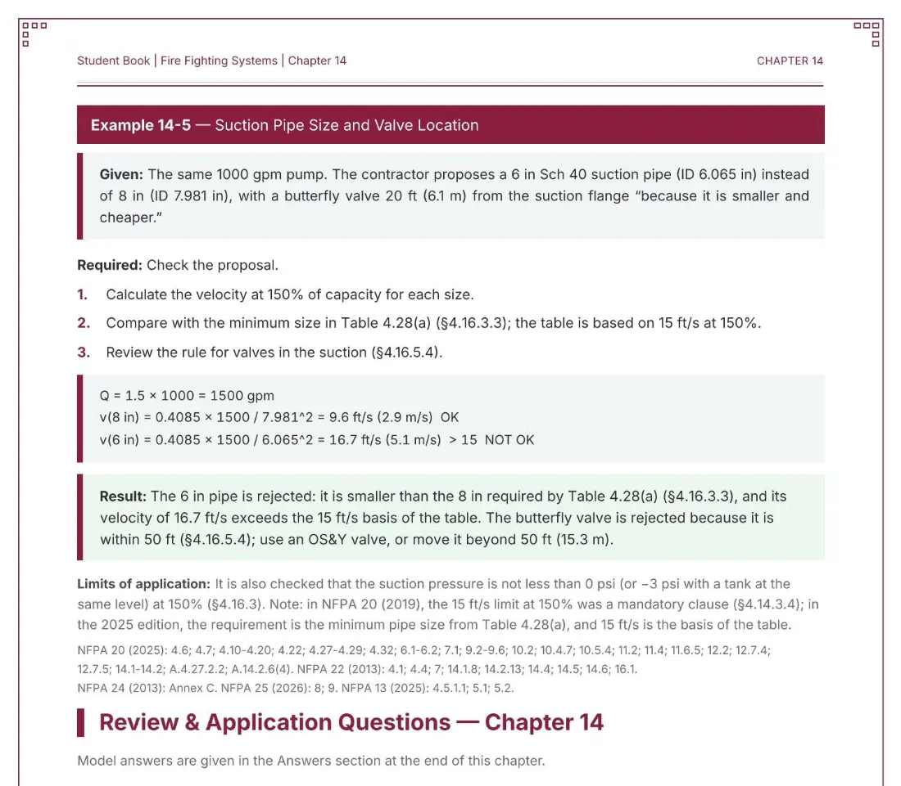
"Smaller and Cheaper": Why a Value-Engineered Suction Pipe Gets Rejected Twice
During a submittal review for a 1,000 gpm fire pump, the contractor proposed two changes:
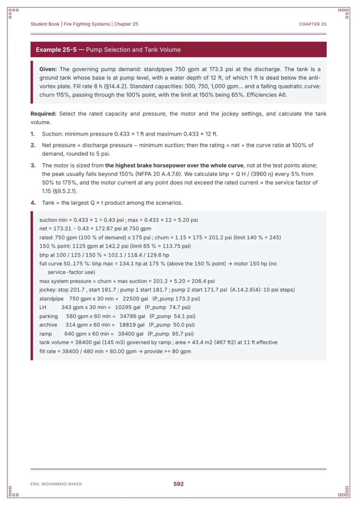
The Largest Pump Demand Does Not Always Size the Fire Tank
It is common to size the fire water tank from the scenario that needs the most pressure or flow. The governing scenario is actually the one with the larges…

Clean Agent: Don’t Forget the Underfloor Void
Consider this simplified (FM-200) example:
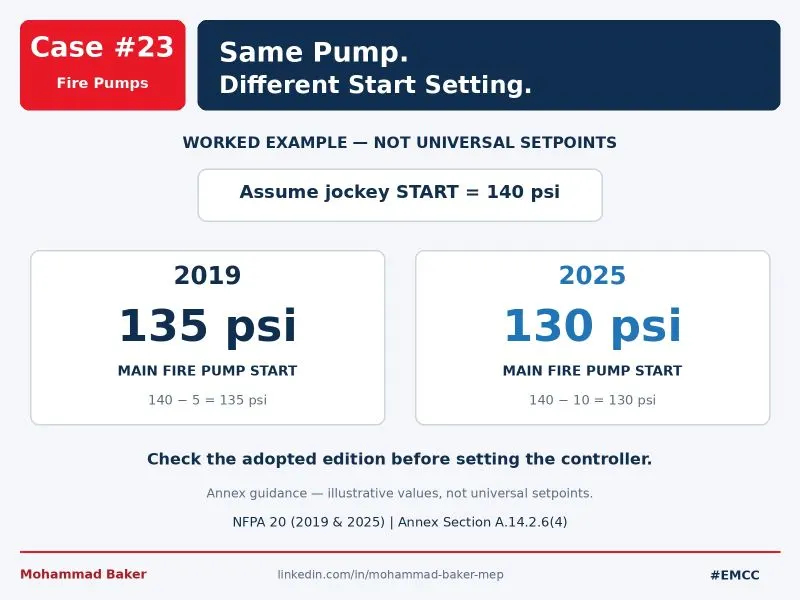
Same Pump. Different Start Setting.
Copying pressure settings from an older project can overlook a change in Annex guidance.
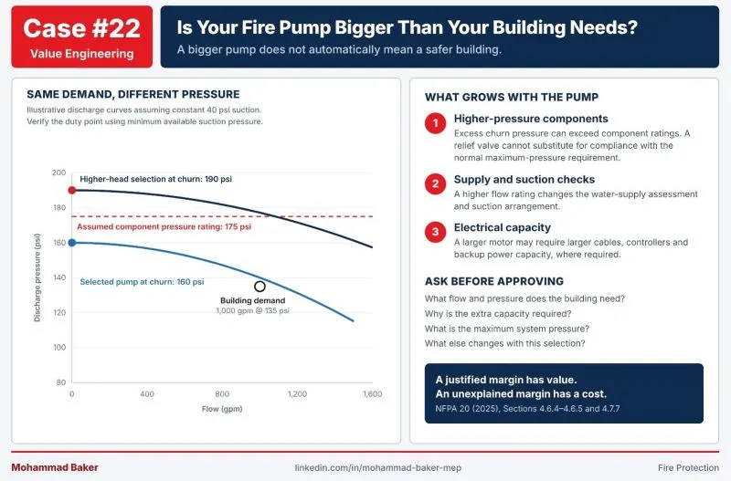
Is Your Fire Pump Bigger Than Your Building Needs?
As a project owner, you may hear: “Let’s go one size up on the fire pump, just to be safe.”
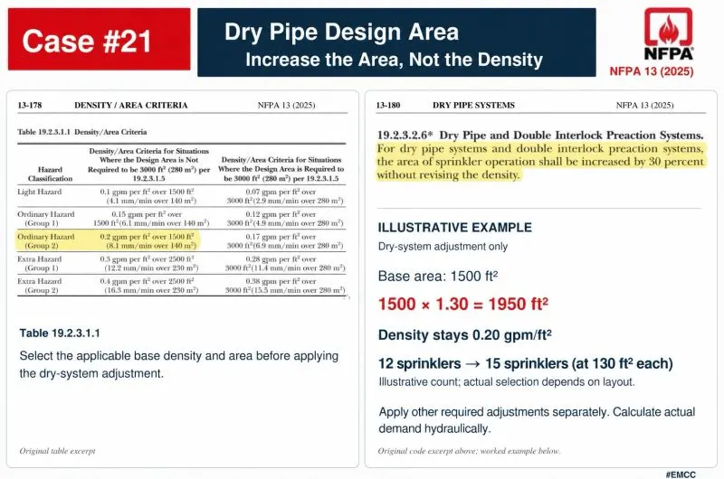
Dry Pipe Systems: Increase the Area, Not the Density
A 30% increase in design area is not interchangeable with a 30% increase in density.
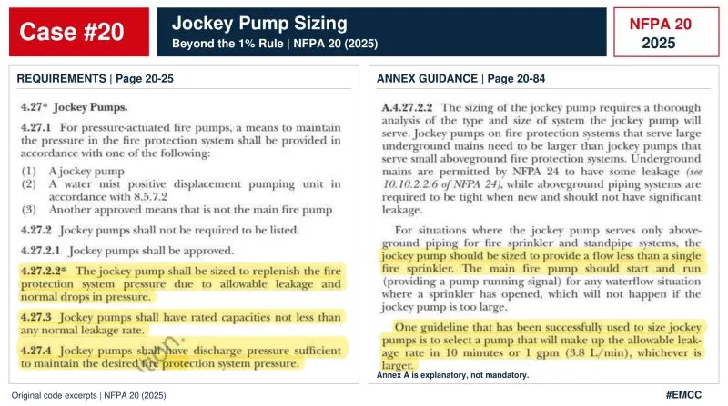
Jockey Pump Sizing — Beyond the 1% Rule
A 1000 GPM fire pump does not automatically require a 10 GPM jockey pump.
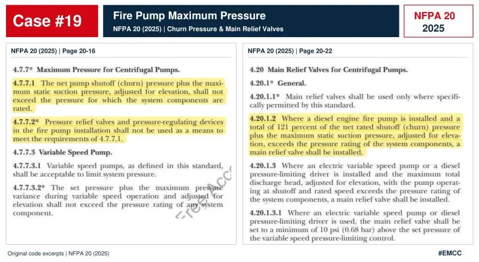
A 100 psi Pump Can Overpressure a 175 psi System
The pump’s rated pressure is not the maximum pressure the system may experience.
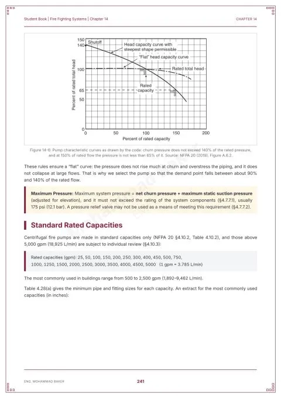
A 1000 GPM Fire Pump — Can It Meet a 1400 GPM Demand?
An increased hydraulic demand does not automatically mean replacing the fire pump.
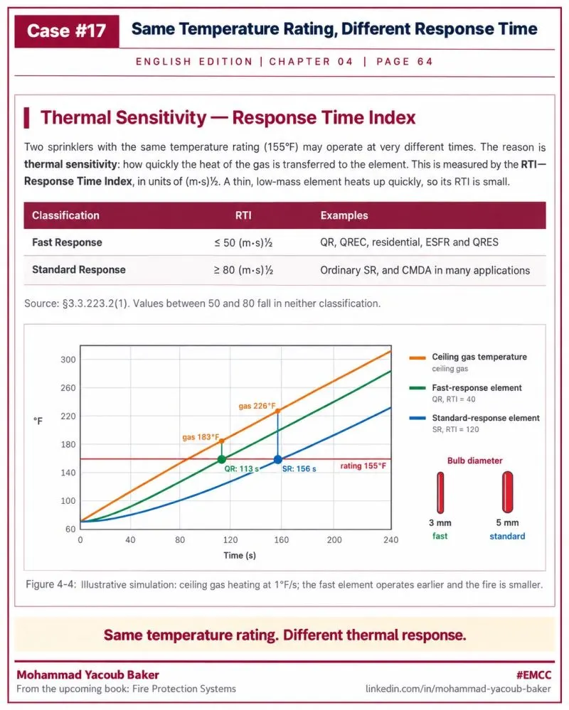
Same Temperature Rating, Different Response Time
Two sprinklers rated at 68°C (155°F) can operate at different times under the same hot-gas conditions.
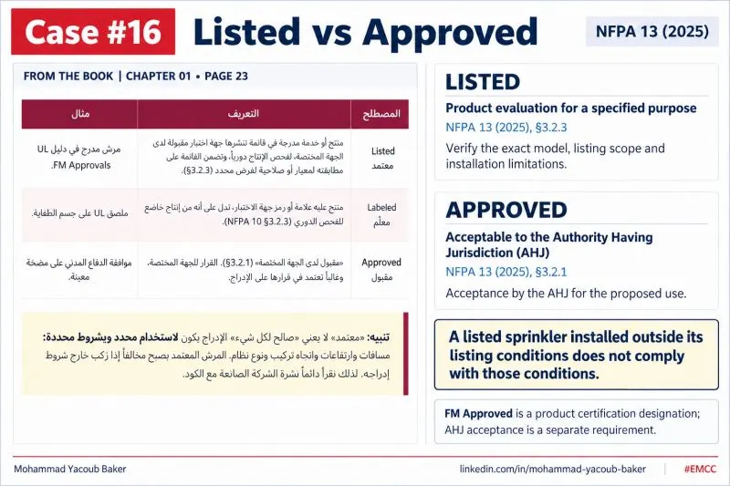
Listed vs Approved
A Listed product is not automatically suitable for every installation.
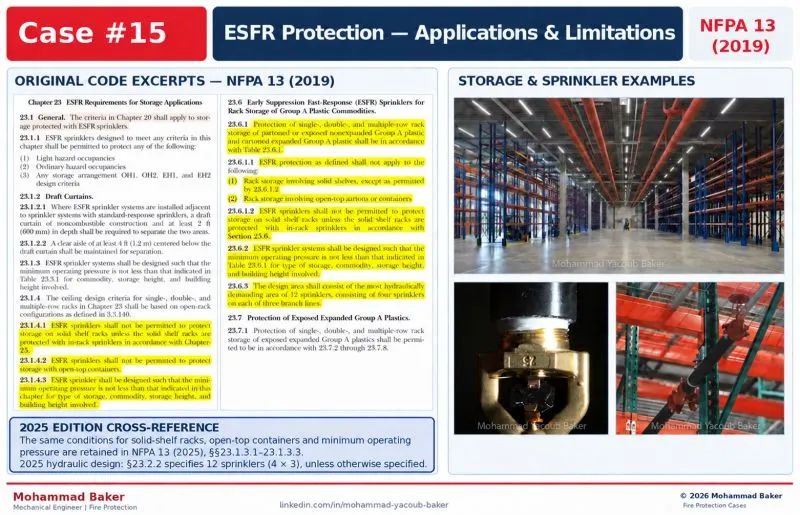
ESFR Protection — Applications & Limitations
ESFR can provide ceiling-only protection in many warehouses, provided the applicable storage and installation criteria are met.
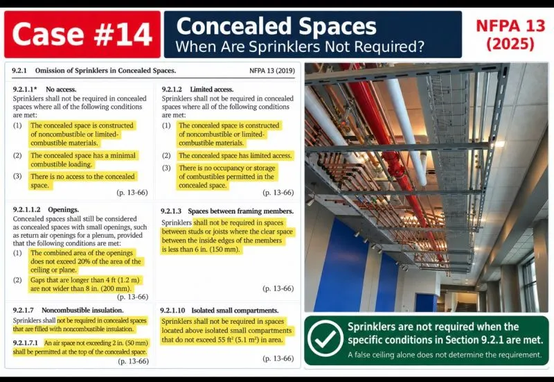
Concealed Spaces: When Are Sprinklers Not Required?
Does every false ceiling require sprinklers above it? Not necessarily.
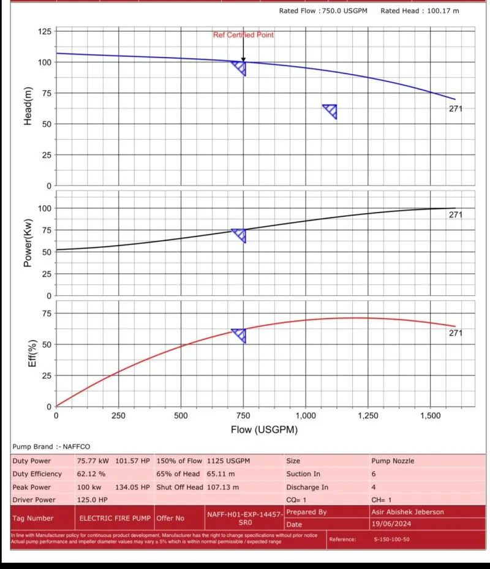
How to Read a Fire Pump Performance Curve
A fire pump is not selected by GPM and pressure alone. The performance curve tells you what the pump actually delivers.

Why Calculated Sprinkler Demand Can Exceed Density × Area
Density × Area is the starting point, not the final hydraulic demand.
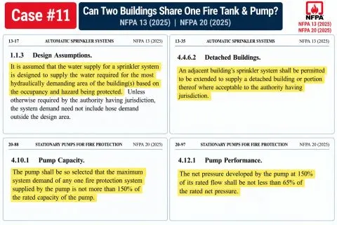
Can Two Buildings Share One Fire Tank & Pump?
YES — but you don’t automatically add both buildings’ demands together!
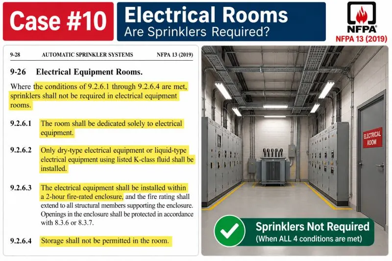
Can Sprinklers Be Omitted in Electrical Rooms?
YES — but only when ALL FOUR conditions are met.
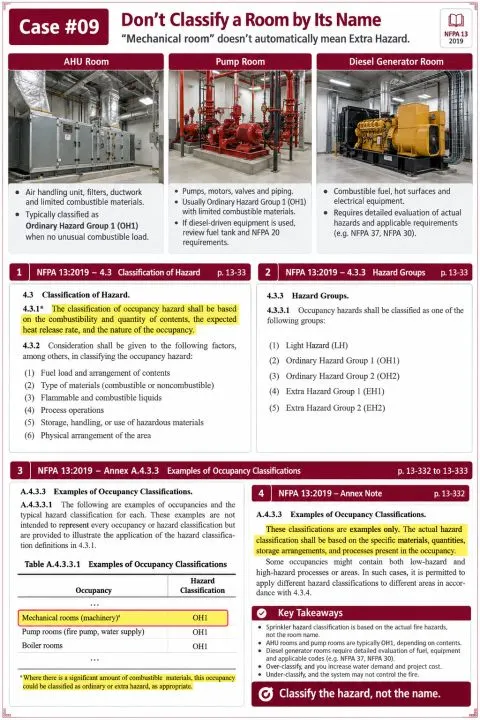
Don't Classify a Room by Its Name
A "mechanical room" is not automatically Extra Hazard. I still see AHU rooms, pump rooms and generator rooms all set to EH1 or EH2 on drawings, just becaus…
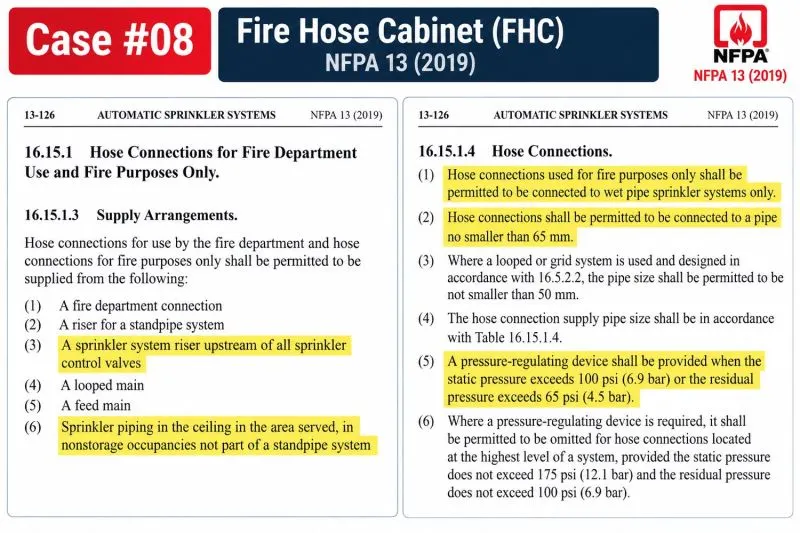
Fire Hose Cabinet (FHC)
A Fire Hose Cabinet doesn’t always need a separate piping network.

Diesel Fire Pump: How Big Should the Fuel Tank Be?
A common question in diesel fire pump design:

Window Sprinklers: One Side or Both Sides?
In one of our projects, glazing was used as part of a required fire separation.
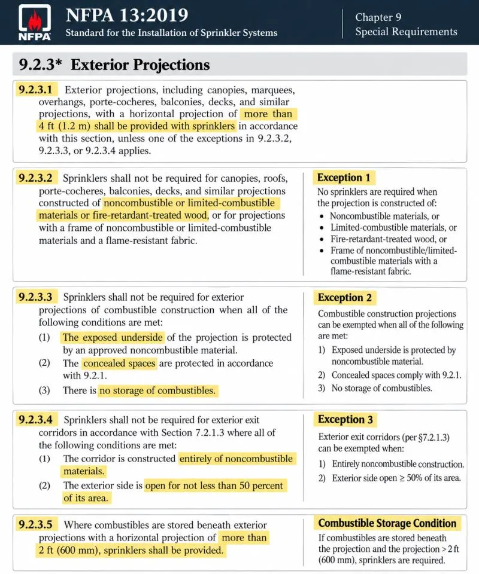
The 1.2 m Canopy Rule
Does every canopy or exterior projection greater than 1.2 m require sprinklers?

Where Did the “80 cm Rule” for Concealed Spaces Come From?
And does a ceiling void ≤ 80 cm always mean that sprinklers are not required?

Open Stair / Escalator: Do We Really Need Deluge?
In one of our mall projects, we had an open vertical opening around a stair/escalator, and the initial fire protection requirement was to provide a:

Flush Tank to Flush Valve: A Big Hydraulic Impact
In one of our hospital projects, a seemingly simple architectural decision was made regarding the WC type:
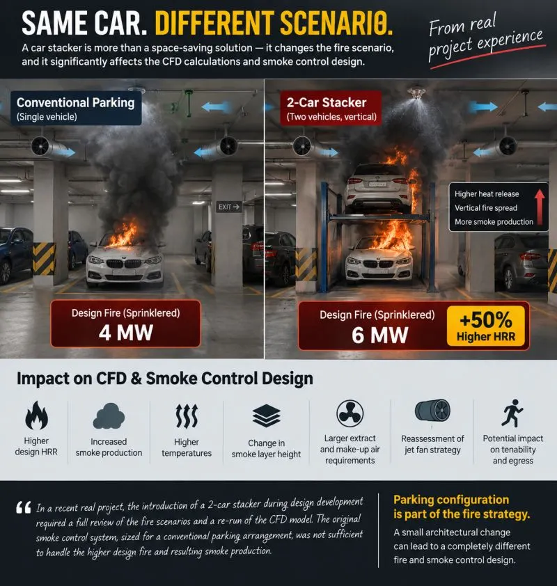
A Small Architectural Change, a Major Engineering Impact
From a real project experience, a seemingly simple decision to introduce a 2-Car Stacker into a parking area triggered a major review of the fire protectio…